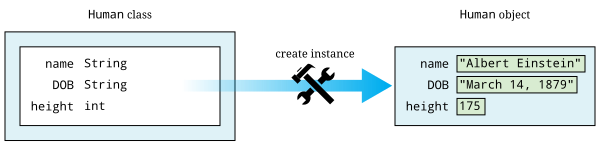

Capítulo 9. Classes
Seres luminosos nós somos, não essa matéria bruta.
9.1. Problema: Expressões aninhadas
Como o compilador verifica o código Java que você escreve e identifica erros? A análise sintática e a verificação de tipos são processos complexos que constituem partes essenciais do projeto de um compilador. Os compiladores estão entre os programas mais complexos que existem, e a criação de um deles está além do escopo do conteúdo abordado neste livro. No entanto, podemos compreender melhor alguns problemas enfrentados pelos projetistas de compiladores ao considerarmos o problema das expressões corretamente aninhadas.
Existem muitas regras para formar um código Java correto, mas é sempre
necessário que os símbolos de agrupamento ((, ), [, ], {, }) estejam corretamente
aninhados. Ignorando outros símbolos, podemos encontrar uma seção de código que
contém a sequência ( ) [ ], mas um código escrito corretamente nunca
contém ( [ ) ].
Para estarem corretamente aninhados, os parênteses de abertura e fechamento devem estar em pares, assim como os colchetes de abertura e fechamento também devem estar em pares e as chaves de abertura e fechamento também devem estar em pares. Além disso, um conjunto corretamente equilibrado de parênteses pode ser aninhado dentro de um conjunto corretamente equilibrado de colchetes ou chaves (e vice-versa), mas eles não podem se cruzar como acontece no final do parágrafo anterior. A tabela abaixo mostra mais exemplos de expressões aninhadas de forma correta e incorreta .
| Aninhadas corretamente | Aninhadas incorretamente |
|---|---|
( |
|
(){} |
}{ |
abc{x} |
( a { b ) c } |
({[z]}) |
{abc( |
({xyz})({ijk}[123]) |
{(333)888(}) |
Mas como podemos examinar uma expressão para verificar se ela está corretamente aninhada? A chave para resolver esse problema é a ideia de uma pilha. Uma pilha é uma estrutura de dados simples com três operações: push, pop e top. A estrutura de dados foi concebida para se comportar como uma pilha de livros, copos ou quaisquer outros objetos físicos. Quando você usa a operação push, está movendo algo para o topo da pilha. Quando usa a operação pop , está retirando algo do topo da pilha. A operação top é usada para ler o que está atualmente no topo da pilha. Em uma pilha, você só pode ler o item que está bem no topo, como se todos os outros itens estivessem escondidos embaixo dele. Uma pilha é conhecida como uma estrutura de dados FILO (em inglês First In, Last Out) primeiro a entrar, último a sair (em português), ou LIFO (em inglês Last In, First Out) ou último a entrar, primeiro a sair (em português) porque, se você inserir uma série de itens na pilha e depois retirá-los todos da pilha, eles saem da pilha na ordem inversa àquela em que foram adicionados.
Com essa compreensão da pilha, é fácil verificar se uma expressão está aninhada corretamente. Analise cada caractere da entrada e siga estas etapas.
-
Se for um parêntese de abertura, colchete de abertura ou chave de abertura , coloque-o na pilha.
-
Se for um parêntese direito, colchete direito ou chave direita , verifique se o topo da pilha é sua metade esquerda correspondente. Se for, retire a metade esquerda da pilha. Se não for (ou se a pilha estiver vazia), os símbolos de agrupamento estão desequilibrados ou se cruzando. Imprima um erro e saia.
-
Para qualquer caractere que não seja um símbolo de agrupamento, ignore-o e siga em frente.
Se você chegar ao fim da entrada sem erros, verifique se a pilha está vazia. Se estiver, então todos os símbolos de agrupamento de esquerda foram emparelhados com os símbolos de agrupamento de direita. Caso contrário, há símbolos de esquerda restantes na pilha, e a expressão não está corretamente aninhada.
9.2. Conceitos: Programação orientada a objetos
Para resolver o problema das expressões aninhadas, podemos criar uma estrutura de dados de pilha
. Cada elemento da pilha deve ser capaz de armazenar um termo do tipo char
de uma expressão, sendo que um termo é um operador, um operando ou
um parêntese (colchete ou chave). Embora pudéssemos nos virar usando
apenas os métodos estáticos que apresentamos no capítulo anterior, uma ferramenta melhor
pode facilitar a programação.
Estamos apresentando esses tópicos de forma progressiva: primeiro, todos os nossos
programas eram uma série de instruções sequenciais dentro do método main()
. Adicionamos instruções de seleção e repetição para resolver problemas mais
difíceis. À medida que nossos programas se tornaram mais complexos, começamos a
usar métodos estáticos adicionais para dividir o programa em segmentos lógicos
. Agora, estamos migrando totalmente para a programação orientada a objetos (POO)
, na qual tanto os dados quanto o código podem ser agrupados em objetos que interagem
entre si.
A POO tem sido um tema controverso, especialmente na comunidade de educação em ciência da computação. O mais importante a lembrar é que não estamos descartando nenhuma das ideias que usamos anteriormente. Continuamos em um caminho para tornar o código mais seguro e reutilizável. Vários outros capítulos deste livro abordam conceitos importantes da POO, como herança e polimorfismo. A seguir, vamos nos concentrar nos conceitos básicos, incluindo os fundamentos dos objetos, o encapsulamento de dados e os métodos de instância (não estáticos).
9.2.1. Objetos
Você já usou objetos, talvez sem perceber. Toda vez que
você usa um String, está usando um objeto. Até agora, criamos uma
classe toda vez que escrevemos um programa. Uma classe é uma forma de organizar
métodos estáticos, mas uma classe é algo mais: um modelo para objetos.
Sempre que você escreve uma classe, existe a possibilidade de criar objetos a partir dela
.
Para um exemplo conceitual, você pode pensar em “Humano” como uma classe e em Albert Einstein como um objeto (ou uma instância) dessa classe. A classe define certas características que todos os seres humanos possuem: nome, data de nascimento, altura e assim por diante. Já o objeto possui valores específicos para cada uma dessas características, como Albert Einstein, 14 de março de 1879, 175 e assim por diante.

Essa ideia de uma classe como modelo é fundamental, pois significa que um objeto de um determinado tipo (de uma determinada classe) pode ser usado em qualquer lugar que seja apropriado para outro objeto desse tipo. Mais adiante neste capítulo, vamos criar um objeto que desempenha a função de uma pilha, armazenando vários outros objetos. Se projetarmos uma biblioteca de código capaz de manipular ou utilizar objetos de pilha, poderemos usar essa biblioteca inúmeras vezes para inúmeros objetos de pilha diferentes sem alterar o código. Esse tipo de reutilização de código é um dos principais objetivos da POO.
9.2.2. Encapsulamento
Para garantir que os objetos possam ser usados em muitos contextos diferentes com segurança, os dados dentro do objeto devem ser protegidos. O Java fornece modificadores de acesso para que o código sem a permissão adequada não possa alterar ou mesmo ler os dados dentro de um objeto.
Esse recurso é chamado de encapsulamento. Um programador pode escrever o
arquivo de classe definindo um tipo de objeto, enquanto outro ou muitos outros escrevem
código que utiliza esses objetos. Os programadores que utilizam objetos escritos por
outros não precisam compreender o funcionamento interno desses objetos.
Em vez disso, eles podem tratar cada objeto como uma “caixa preta” com uma lista de
ações que o objeto pode realizar. Cada ação tem uma determinada
entrada e uma determinada saída, mas o funcionamento interno do
objeto fica oculto.
9.2.3. Métodos de instância
Essas “ações” são métodos, mas não são estáticos. Métodos estáticos
não precisavam de um objeto para serem chamados. Métodos regulares (de instância)
devem ser considerados como uma ação realizada em (ou por) um
objeto específico. Essa ação pode ser fazer uma pergunta, como perguntar qual
é o nome de um objeto do tipo Humano. Essa ação pode ser instruir o
objeto a se alterar, como no caso de empurrar algo para uma
pilha.
Uma das definições mais amplas de um objeto é uma coleção de dados e métodos para acessar esses dados. Chamamos os dados dentro de um objeto de seus campos ou dados de instância, e os métodos para acessá-los de métodos de instância . Os métodos estáticos são usados principalmente para modularizar grandes blocos de código em unidades funcionais menores. No entanto, os métodos de instância estão intimamente ligados aos campos de um objeto e realizam tarefas que alteram o objeto ou obtêm informações dele.
9.3. Sintaxe: Classes em Java
Conceitos de POO, como o encapsulamento, podem parecer um tanto obscuros até que você os veja na prática. Lembre-se: queremos apenas criar alguns dados privados e, em seguida, definir algumas formas cuidadosamente controladas pelas quais esses dados possam ser manipulados. Primeiro, descreveremos como declarar campos; depois, explicaremos como escrever métodos de instância para manipular esses dados; e, por fim, daremos mais detalhes sobre como proteger sua privacidade.
9.3.1. Campos
Os campos em um objeto devem ser declarados como qualquer outro dado em Java. O
tipo de um campo pode ser um tipo primitivo ou de referência. Os campos são
também, às vezes, chamados de variáveis-membro. Você declara campos exatamente como
faria com variáveis de classe, só que sem a palavra-chave static. Aqui está um
exemplo com a classe Human.
public class Humano {
private String nome;
private String DN;
private int altura; // em cm
}Com essa definição, um objeto Humano possui três atributos: name,
DN e altura. Como o modificador de acesso de cada campo é
private, o código fora dessa classe não pode alterar nem mesmo ler os
valores. Essa classe ainda não pode fazer nada. Além disso, ela não contém
um método main(). Não há como executar
essa classe, mas tudo bem. Poderíamos adicionar um método main(), é claro.
public class Humano {
private String nome;
private String DN;
private int altura; // em cm
public static void main(String[] args) {
nome = “Albert Einstein”;
DN = “14 de março de 1879”;
altura = 175;
}
}Agora adicionamos um método main(), mas nosso código não compila.
Como o método main() é um método estático, ele não está associado a
nenhum objeto específico. Quando instruímos o método main() a alterar os
campos, ele não sabe de qual objeto estamos falando. Se
realmente quisermos usar um objeto, teremos que criar um.
public class Human {
private String name;
private String DOB;
private int height; // in cm
public static void main(String[] args) {
Human einstein = new Human();
einstein.name = "Albert Einstein";
einstein.DOB = "March 14, 1879";
einstein.height = 175;
}
}O código acima compila porque usamos a palavra-chave new para criar
um objeto do tipo Humano armazenado em uma variável de referência chamada
einstein. Podemos definir os campos dentro de um objeto específico usando
a notação de ponto. Com métodos estáticos e variáveis estáticas, usamos o nome
da classe seguido de um ponto, mas para métodos de instância e
variáveis de instância, usamos o nome do objeto seguido de um ponto. Mesmo
que cada um desses campos seja privado, podemos acessá-los a partir de main()
porque main() está dentro da classe Humano. O código dentro de outra
classe poderia criar um novo objeto Humano, mas não poderia alterar seus
campos.
Essa justaposição de campos e métodos estáticos e não estáticos dentro de
uma única classe é confusa para muitos programadores iniciantes em Java. A confusão
parece decorrer do fato de que a classe (como Humano) é um
modelo para objetos, mas também é um local para abrigar outro código relacionado,
como métodos estáticos, incluindo main().
Embora a prática seja desaconselhada, mencionamos em
Seção 8.3.3 que as variáveis de classe podem ser
armazenadas na própria classe. Cada objeto possui uma cópia distinta de cada
campo, mas há apenas uma única cópia de cada variável de classe que todos
compartilham. Ao usar a palavra-chave static, poderíamos adicionar uma variável de classe
chamada populacao à nossa classe Humano, já que essa é uma informação
relacionada aos seres humanos como um todo, e não a qualquer ser humano individualmente.
public class Humano {
private String name;
private String DN;
private int altura; // em cm
private static long populacao = 7714576923;
}Estamos usando um long para representar a população mundial, já que o
valor é grande demais para caber em um int. Se vários objetos Human
fossem criados, cada um teria seus próprios valores de nome, DN e altura
, mas o valor de populacao seria armazenado apenas na classe.

9.3.2. Construtores
Para criar um novo objeto, é preciso chamar um construtor, um
tipo especial de método capaz de inicializar o objeto. Um construtor define
os valores dentro de um objeto quando este é criado pela primeira vez. Vamos considerar
uma classe Retangulo simples, com apenas dois campos: comprimento e largura,
ambos do tipo int.
public class Retangulo {
private int comprimento;
private int largura;
Um possível construtor para a classe é apresentado abaixo.
public Retangulo(int c, int l) {
comprimento = c;
largura = l;
}Esse construtor nos permite definir a largura e o comprimento quando o objeto é
criado. Para isso, o código deve invocar o construtor usando a palavra-chave new
.
Retangulo retangulo = new Retangulo(50, 20);Esse código cria um novo objeto Retangulo, com comprimento 50 e largura 20.
Os construtores são quase sempre public; caso contrário, seria
impossível para um código fora da classe Retangulo criar um
objeto Retangulo. Observe que a definição do construtor Retangulo
não possui um tipo de retorno. Um construtor é o único tipo
de método que não possui um tipo de retorno. Também é possível ter mais
de um construtor, assim como outros métodos podem ser sobrecarregados.
Para mais informações sobre métodos sobrecarregados, consulte
Seção 8.3.1.2.
public Retangulo(int valor) {
comprimento = valor;
largura = valor;
}Na mesma classe, poderíamos ter este segundo construtor, permitindo
que criemos um quadrado de forma rápida e fácil. Todas as classes possuem construtores,
mas alguns não são definidos explicitamente. Se você não definir um construtor
para uma classe, um construtor padrão é criado automaticamente. O
construtor padrão não recebe parâmetros e define todos os valores dentro do novo
objeto com os valores padrão, como null e 0. Assim que você cria um
construtor, o construtor padrão deixa de existir. Assim, como nossa
definição da classe Rectangle já contém dois construtores,
a linha a seguir causaria um erro de compilação se alguém tentasse usá-la
em seu código.
Retangulo retanguloPadrao = new Retangulo();Outro aspecto importante a se considerar em todos os métodos de instância é o escopo. Os campos são visíveis dentro dos métodos de instância, mas podem ser ocultados por parâmetros e outras variáveis locais.
public Retangulo(int comprimento, int largura) {
comprimento = comprimento;
largura = largura;
}Esta versão do construtor Retangulo com dois parâmetros compila, mas
não inicializa corretamente os valores dos campos comprimento e
largura. Em vez disso, os parâmetros comprimento e largura são copiados de volta
para si mesmos sem motivo algum. Os criadores do Java previram que
seria útil referir-se a campos mesmo na presença de outras
variáveis com o mesmo nome. Para isso, pode-se usar a palavra-chave this.
Qualquer campo (ou método) pode ser referido pelo nome do objeto, seguido por
um ponto, seguido pelo nome desse campo ou método. Como você não
tem um nome de variável para referenciar o objeto quando está dentro dele,
a palavra-chave this atua como uma referência ao objeto.
public Retangulo(int comprimento, int largura) {
this.comprimento = comprimento;
this.largura = largura;
}Esta versão do código funciona corretamente, já que explicitamente
instruímos o Java a armazenar o argumento comprimento no campo comprimento dentro
do objeto apontado por this e fazer o mesmo com largura.
9.3.3. Métodos
Os objetos só ganham vida de verdade quando você adiciona métodos de instância. Com
a classe Retangulo descrita acima, quaisquer objetos Retangulo criados
não seriam úteis para outras classes, pois seria impossível acessar seus
dados. Em vez disso, queremos criar uma relação clara e útil entre
os campos e os métodos.
Existem muitos tipos diferentes de métodos, mas dois dos mais importantes são os acessadores e os mutadores.
Acessadores
Muitas vezes, queremos ler os dados contidos em vários objetos. Com nossa
definição atual de Retangulo, nenhum código de uma classe externa pode
descobrir o comprimento ou a largura do retângulo que estamos representando.
Métodos acessadores (ou simplesmente acessadores) são projetados para essa tarefa.
Por definição, um acessador nos permite ler alguns dados ou obter algumas
informações de um objeto sem fazer nenhuma alteração em seus campos.
Pode-se pensar nos acessadores como uma forma de fazer uma pergunta ao objeto. Os nomes
dos acessadores geralmente começam com a palavra get.
public int getComprimento() {
return comprimento;
}
public int getLargura() {
return largura;
}Aqui estão dois métodos acessadores que esperaríamos encontrar na classe Retangulo
. O primeiro retorna o valor de comprimento, e o segundo retorna
o valor de largura. Esses métodos apenas informam dados. Eles não
alteram o valor de nenhuma das variáveis. Sua sintaxe deve ser
autoexplicativa.
Cada um deles é declarado como public para que qualquer pessoa possa
ler o comprimento e a largura de um retângulo. Ambos os métodos têm um tipo de retorno
int, pois esse é o tipo usado para armazenar comprimento e
largura dentro de um objeto Retangulo. Nenhum dos métodos possui parâmetros.
É claro que um método de acesso não precisa ser tão simples. Um método de acesso poderia retornar um
valor que precisa ser calculado a partir dos dados do campo subjacente.
public int getArea() {
return comprimento*largura;
}
public int getPerimetro() {
return 2*comprimento + 2*largura;
}Esses acessadores calculam a área e o perímetro, respectivamente, do
retângulo em questão, mesmo que esses dados não estejam armazenados diretamente no
objeto Retangulo.
Mutadores
Alguns objetos, como valores do tipo String, são objetos imutáveis, o que significa
que os dados armazenados neles não podem ser alterados depois de terem sido
criados por meio de um construtor. Se você já pensou que estava
alterando uma String, na verdade estava criando uma nova String com as
modificações apropriadas. A maioria dos objetos é mutável, no entanto, e usamos
métodos chamados métodos mutadores (ou simplesmente mutadores) para alterar seus
campos.
Assim como os acessadores, os mutadores não possuem sintaxe especial. O termo é usado para
descrever quaisquer métodos que alterem os dados dentro de um objeto. Para a
classe Retangulo, os únicos dados internos que temos são as variáveis comprimento e
largura. Os mutadores para esses campos podem ter a seguinte aparência.
public void setComprimento(int comprimento) {
this.comprimento = comprimento;
}
public void setLargura(int largura) {
this.largura = largura;
}Assim como os nomes de muitos acessadores começam com get, os nomes de
muitos mutadores começam com set. Os mutadores geralmente têm um tipo de retorno void
porque estão alterando o objeto, e não retornando informações. Alguns
mutadores podem ter um tipo de retorno que fornece informações sobre um erro
que ocorreu ao tentar fazer uma alteração. Observe que usamos a
palavra-chave this mais uma vez para distinguir cada campo do argumento do método
com o mesmo nome.
Você deve ter notado que usamos a estrutura de um método tanto para obter
quanto para definir o campo comprimento, por exemplo. Talvez isso pareça
desnecessariamente complexo. Afinal, se a variável comprimento tivesse sido
declarada com o modificador public em vez do modificador private,
poderíamos obter e definir seu valor diretamente, sem usar métodos. Em
resposta a isso, vamos aprimorar os mutadores que definem comprimento e largura.
public void setComprimento(int comprimento) {
if (comprimento > 0) {
this.comprimento = comprimento;
}
}
public void setLargura(int largura) {
if (largura > 0) {
this.largura = largura;
}
}Com esses mutadores aprimorados, podemos impedir que um usuário defina os
valores de comprimento e largura como números negativos ou zero, valores que
não fazem sentido para as dimensões de um retângulo. Para objetos mais complexos
, torna-se ainda mais importante proteger os valores dos
campos contra usuários mal-intencionados ou que cometam erros.
9.3.4. Modificadores de acesso
O ocultamento de dados está no cerne do modelo de POO do Java. Existem quatro
níveis diferentes de acesso que podem ser aplicados a campos e métodos,
sejam eles estáticos ou não. São eles: public, private, protected e
package-private.
Modificador public:
O modificador de acesso public indica que uma variável ou método pode ser
acessado por qualquer código, independentemente da classe que o contenha. A maioria dos métodos
deve ser public para que possam ser usados livremente para interagir com
seu objeto. Praticamente nenhum campo deve ser public. Constantes (estáticas
ou não) são a exceção mais significativa a essa regra. Tornar
constantes public geralmente não é um problema, já que elas não podem ser alteradas
por código externo de qualquer maneira. Na classe Retangulo, as variáveis comprimento e
largura são tão simples que torná-las public não é irracional. Se
você tiver um campo que possa ser alterado a qualquer momento por qualquer código para qualquer
valor, você pode deixar esse campo public.
Modificador private::
Esse modificador indica que uma variável ou método não pode ser acessado por nenhum
código, a menos que esse código esteja contido na mesma classe. É importante
perceber que a restrição se baseia na classe, não no
objeto. O código dentro de qualquer objeto Retangulo pode modificar valores private
dentro de qualquer outro objeto Retangulo e da classe como um todo. A maioria dos campos deve ser
private para que o código externo não possa modificá-los. Os métodos podem ser
private, mas devem ser métodos auxiliares ou de utilidade usados
dentro da classe ou do objeto para dividir o trabalho.
Modificador protected::
Este modificador indica que uma variável ou método não pode ser acessado por nenhum
código, a menos que esse código esteja contido na mesma classe, em uma subclasse ou
no mesmo pacote. Esse nível de acesso é mais restritivo do que
public, mas menos restritivo do que private ou o acesso padrão. Nós
discutimos isso mais detalhadamente no contexto de subclasses e herança em
Capítulo 11.
Privado ao pacote (sem modificador explícito)::
Se você não digitar um modificador de acesso ao declarar um campo ou
método, esse campo ou método não será public. Em vez disso, tem o
modificador de acesso padrão ou privado ao pacote aplicado a ele. Campos ou
métodos com esse modificador podem ser acessados por qualquer código que esteja no
mesmo pacote ou diretório. Um pacote é mais uma camada de
organização que o Java oferece para agrupar classes. Ao usar
uma instrução import, você pode importar um pacote inteiro de classes.
Não há palavra-chave para esse modificador de acesso. Ele pode ser útil se você estiver
projetando um pacote contendo classes que precisem acessar os
campos ou métodos umas das outras. Por enquanto, você deve sempre atribuir aos seus campos
e métodos um modificador explícito public ou private (ou, às vezes, protected)
.
Da menos restritiva à mais restritiva, os modificadores são public,
protected, privado ao pacote e private. Cada nível adicional de
restrição remove uma única categoria de acesso. Todos os campos e métodos
podem ser acessados por código da mesma classe. A tabela a seguir apresenta
os contextos fora da classe que podem acessar um campo ou método marcado
com cada modificador.
| Modificador | Pacote | Subclasse | Não relacionadas Classes |
|---|---|---|---|
|
Sim |
Sim |
Sim |
|
Sim |
Sim |
Não |
Privado ao pacote |
Sim |
Não |
Não |
|
Não |
Não |
Não |
Embora sejam necessários programas grandes e complexos para perceber os reais benefícios da POO em Java, aqui está um exemplo que mostra como os objetos podem ser usados para criar uma lista de alunos.
Vamos criar uma classe Student para que possamos armazenar objetos
contendo informações da lista de alunos. Em seguida, vamos criar um
programa cliente que lê dados de um usuário para criar objetos Student,
classificá-los por média geral (GPA) e, então, exibi-los na tela.
public class Student {
public static final String[] YEARS = {"Freshman", "Sophomore", "Junior", "Senior"};
private String name;
private int year;
private double GPA;Começamos definindo a classe Student. Primeiro, há uma constante
que é uma matriz de valores do tipo String, contendo os nomes de cada um dos quatro anos.
Em seguida, são declarados os campos da classe Student para armazenar o nome, o ano e a média geral (GPA)
do aluno.
public Student(String name, int year, double GPA) {Temos um construtor para essa classe, que recebe um String, um
int e um double correspondentes ao nome, ano e média geral (GPA) do
aluno. O construtor, então, usa internamente métodos mutadores para armazenar
os valores nos campos. Ao fazer isso, aproveitamos automaticamente
a verificação de erros no mutador da média geral (GPA).
public void setName(String name) { this.name = name; }
public void setYear(int year) { this.year = year; }
public void setGPA(double GPA) {
if (GPA >= 0 && GPA <= 4.0) {
this.GPA = GPA;
} else {
System.out.println("Invalid GPA: " + GPA);
}
}Estes são os mutadores correspondentes a cada um dos três campos. A entrada para os mutadores de nome e ano não é verificada, mas o mutador de GPA verifica se o valor do GPA está dentro do intervalo adequado.
public String getName() { return name; };
public int getYear() { return year; };
public double getGPA() { return GPA; };
public String toString() {
return name + "\t" + YEARS[year] + "\t" + GPA;
}
}Por fim, esses acessadores permitem que o usuário obtenha o nome, o ano ou
o GPA de um determinado aluno. Toda classe em Java possui automaticamente um
método toString() que é chamado sempre que um objeto está sendo impresso
diretamente. Fizemos com que esse método retorne as informações em
Student formatadas como uma String.
Criar a classe Student é apenas metade do trabalho. Também precisamos
criar o código cliente para usá-la.
import java.util.*;
public class StudentRoster {
public static void main(String[] args) {
Scanner in = new Scanner(System.in);
int students = in.nextInt(); (1)
Student[] roster = new Student[students]; (2)
for (int i = 0; i < roster.length; ++i) { (3)
in.nextLine();
roster[i] = new Student(in.nextLine(), in.nextInt(), in.nextDouble());
}
sort(roster); (4)
for (int i = 0; i < roster.length; ++i) {
System.out.println(roster[i]);
}
}| 1 | O método main() na classe StudentRoster começa lendo
o número total de alunos. |
| 2 | Em seguida, ele cria um array do tipo Student
com esse comprimento. |
| 3 | Depois, ele lê repetidamente um nome, um ano e uma média geral (GPA),
cria um novo objeto Student com esses valores e o armazena no
array. |
| 4 | Após criar todos os objetos Student, ele os ordena com uma
chamada de método e os exibe na tela. |
Uma peculiaridade neste código é o in.nextLine() aparentemente supérfluo no
primeiro loop for. Essa linha de código consome um caractere de nova linha
final da entrada anterior. Remova-a e veja com que rapidez o
programa apresenta falhas.
public static void sort(Student[] roster) {
for (int i = 0; i < roster.length - 1; ++i) {
int smallest = i;
for (int j = i + 1; j < roster.length; ++j) {
if (roster[j].getGPA() < roster[smallest].getGPA()) {
smallest = j;
}
}
Student temp = roster[smallest];
roster[smallest] = roster[i];
roster[i] = temp;
}
}
}Este método sort() é semelhante a outros que você já viu. Ele
implementa a ordenação por seleção em ordem crescente com base na média geral (GPA).
Se você executar este programa, perceberá que ele não solicita entrada do usuário. Esta versão do código foi projetada para receber entrada redirecionada de um arquivo. Uma versão mais amigável e interativa deveria solicitar a entrada do usuário de forma clara.
Não é necessário usar POO para resolver este problema. Em vez de objetos, poderíamos ter usado três matrizes separadas contendo o nome, o ano e o GPA de cada aluno, respectivamente. No entanto, coordenar essas matrizes entre si se tornaria tedioso, especialmente na hora de classificar.
9.4. Avançado: Classes aninhadas
Dentro de uma classe, você pode definir campos e métodos, mas e quanto a
outras classes? Sim! Ao fazer isso, cria-se uma classe aninhada. Quando você define uma
classe dentro de uma classe externa, ela pode acessar campos e métodos da
classe externa, mesmo que estejam marcados como private. O Java permite várias
maneiras diferentes de definir uma classe aninhada. Todas são úteis, mas cada uma
apresenta diferenças sutis. Algumas classes aninhadas estão vinculadas a um objeto específico
da classe externa, enquanto outras não.
9.4.1. Classes aninhadas estáticas
Se você marcar uma classe aninhada com a palavra-chave static, estará criando uma
classe cujos objetos são independentes de qualquer objeto específico da classe externa
. Essa classe é chamada de classe aninhada estática. Considere a
seguinte definição de classe.
public class Exterior {
private int x;
private int y;
public static class Aninhada {
private int z;
}
}Uma classe aninhada estática é semelhante a uma classe normal de nível superior, com duas
diferenças. Primeiro, o nome completo de uma classe aninhada é o nome da
classe externa seguido por um ponto e, em seguida, pelo nome da classe aninhada. Segundo,
quando recebe um objeto da classe externa, o código em uma classe aninhada estática pode
acessar e modificar dados private (e protected) no objeto da classe externa
.

Classes aninhadas estáticas podem ser usadas quando a classe necessária só é útil em conexão com a classe externa. Assim, aninhar a classe a agrupa com sua classe externa. Podemos criar uma instância da classe aninhada acima da seguinte maneira.
Exterior.Aninhada nested = new Exterior.Aninhada();Por se tratar de uma classe aninhada estática, não precisamos de uma instância do tipo
Exterior para criar uma instância do tipo Exterior.Aninhada. Se você compilar
Exterior.java, serão criados dois arquivos: Exterior.class e
Exterior$Aninhada.class. O sinal de dólar ($) separa os nomes de cada
nível de classe aninhada no nome do arquivo. É possível aninhar classes
dentro de classes aninhadas, produzindo outro arquivo .class com outro
sinal de dólar e o nome da nova classe anexado.
Assim como os membros, as classes aninhadas estáticas podem ser marcadas como public, private,
protected ou privadas ao pacote (sem modificador explícito). Esses modificadores de acesso
controlam qual código pode acessar ou instanciar classes aninhadas estáticas
usando as mesmas regras de acesso para campos e métodos.
Uma aplicação para classes aninhadas estáticas é o teste. Você pode escrever código
que teste a funcionalidade da sua classe externa, manipulando seus
campos, se necessário. Assim, como um arquivo .class separado é criado, você
pode entregar apenas o arquivo .class da classe externa ao seu cliente.
Considere a classe Quadrado, semelhante à classe Retangulo apresentada
anteriormente.
public class Quadrado {
private int lado;
public Quadrado( int lado ) {
this.lado = lado;
}
public int getArea() {
return lado*lado;
}
}Poderíamos adicionar uma classe aninhada estática chamada Teste à Quadrado para testar
se seus métodos getArea() e getPerimetro() estão funcionando corretamente.
O código final poderia ser o seguinte.
public class Quadrado {
private int lado;
public Quadrado( int lado ) {
this.lado = lado;
}
public int getArea() {
return lado * lado;
}
public static class Teste {
public static void main(String[] args) {
Quadrado quadrado = new Quadrado(5);
System.out.print(“Teste 1: ”);
if (quadrado.getArea() == 25) {
System.out.println(“Aprovado”);
} else {
System.out.println(“Reprovado”);
}
quadrado.side = 7;
System.out.print(“Teste 2: ”);
if (square.getArea() == 49) {
System.out.println(‘Aprovado’);
} else {
System.out.println(“Reprovado”);
}
}
}
}Para executar os testes, você deve compilar Quadrado.java e, em seguida, executar a
classe aninhada chamando java Quadrado$Teste. Não é recomendável usar a
classe aninhada para alterar os campos privados em quadrado, mas fizemos isso para
mostrar que isso é permitido em Java. Um teste melhor criaria um segundo
objeto Quadrado com um lado de comprimento 7.
9.4.2. Classes internas
Outro tipo de classe aninhada é a classe interna. Ao contrário das classes aninhadas estáticas , os objetos das classes internas estão associados a um determinado objeto da classe externa. Você pode imaginar um objeto de classe interna como se estivesse dentro de um objeto da classe externa. É impossível instanciar um objeto de classe interna sem primeiro ter um objeto da classe externa. Considere a seguinte definição de classe.
public class Exterior {
private int a;
public class Interior {
private int b;
private int c;
}
}Toda instância de Interior deve estar associada a uma instância de
Exterior. Para instanciar uma classe interna, usa-se o nome de um objeto da classe
externa, seguido por um ponto, pela palavra-chave new e, em seguida,
pelo nome da classe interna. Podemos criar uma instância da classe interna
acima da seguinte maneira.
Exterior exterior = new Exterior(); Exterior.Interior interior = exterior.new Interior();
Essa sintaxe pode parecer confusa, mas torna interior um objeto que existe
dentro de exterior. Assim, se houvesse métodos definidos em Interior, eles
poderiam se referir ao campo a, pois toda instância de Interior estaria
dentro de uma instância de Exterior com uma cópia de a.
A relação entre objetos externos e internos é de um para muitos. Podemos instanciar qualquer número de objetos de classe interna que residam dentro do mesmo objeto de classe externa.

Outra questão relacionada às classes internas (em oposição às classes aninhadas estáticas) é que elas não podem conter métodos estáticos ou campos estáticos (exceto constantes). Como cada instância de uma classe interna está vinculada a uma instância de uma classe externa, os criadores do Java consideraram que os campos e métodos estáticos de uma classe interna, na verdade, pertencem à classe externa.
É até possível definir uma classe dentro de um método, se essa classe for referenciada apenas nesse método. Essa classe é chamada de classe local _. Também é possível criar uma classe local sem nome dinamicamente . Essa classe é chamada de _classe anônima. Tanto as classes locais quanto as anônimas são tipos especiais de classes internas. Devido à maneira como elas são criadas e utilizadas, vamos discuti-las em [Avançado: Classes locais e anônimas]
Se você criar uma estrutura de dados para outros programadores usarem, um recurso útil é a capacidade de recuperar cada item da estrutura de dados em ordem. Diferentes threads ou métodos podem precisar processar esses elementos independentemente uns dos outros. Cada trecho de código pode receber um objeto de classe interna chamado iterador, que pode obter repetidamente o próximo item na estrutura de dados. Como instâncias de uma classe interna podem ler dados privados da classe externa, os iteradores podem acompanhar em que ponto se encontram dentro da estrutura de dados. Se o código externo tivesse permissão para acessar o interior da estrutura de dados, isso violaria o encapsulamento. Iteradores são uma aplicação comum das classes internas.
Podemos criar uma classe SafeArray que só permite que dados sejam gravados em
seu array interno se estiverem dentro do intervalo válido de índices.
public class SafeArray {
private double[] data;
public SafeArray(int size) {
data = new double[size];
}
public int set(int index, double value) {
if (index >= 0 && index < data.length) {
data[index] = value;
}
}
}Poderíamos adicionar uma classe interna chamada Iterator à SafeArray que nos permita
processar todos os valores da matriz sem saber quantos existem.
Esse tipo de comportamento é útil para muitas estruturas de dados dinâmicas, conforme
discutido em Capítulo 19.
public class SafeArray {
private double[] data;
public SafeArray(int size) {
data = new double[size];
}
public void set(int index, double value) {
if (index >= 0 && index < data.length) {
data[index] = value;
}
}
public class Iterator {
private int index = 0;
public boolean hasNext() {
return (index < data.length);
}
public double getNext() {
if (index >= 0 && index < data.length) {
return data[index++];
} else {
return Double.NaN;
}
}
}
}O método a seguir usa o iterador que definimos para calcular a soma
dos valores em um objeto SafeArray.
public static findSum(SafeArray array) {
double sum = 0;
SafeArray.Iterator iterator = array.new Iterator();
while (iterator.hasNext()) {
sum += iterator.getNext();
}
return sum;
}
9.5. Avançado: Tipos de enumeração
Discutimos as constantes em Seção 3.3.5, mas o uso da palavra-chave final apenas
obriga variáveis individuais, sejam elas locais ou de membro, a serem constantes.
E se você quisesse que um objeto inteiro fosse constante? O que isso significaria, afinal?
A linguagem de programação C introduziu as enumerações, listas fixas de constantes nomeadas que começam em 0 e aumentam em um para cada valor. Essa abordagem proporcionou uma maneira fácil de criar constantes distintas e nomeadas para melhorar a legibilidade. Em C, esses valores eram essencialmente inteiros, mas um recurso conceitualmente semelhante foi adicionado no Java 5 para criar enumerações em Java, listas fixas de objetos nomeados.
9.5.1. Tipos básicos de enumeração
As enumerações nos permitem criar listas fixas de objetos. Esses tipos enum podem ser
armazenados em seus próprios arquivos ou aninhados dentro de outras classes. Como exemplo, podemos
criar uma enumeração das quatro direções cardeais.
public enum Cardeais {
NORTE, SUL, LESTE, OESTE
}Agora, há quatro objetos acessíveis pelo nome Cardeais seguido de um ponto
e do nome da direção: Cardeais.NORTE, Cardeais.SUL,
Cardeais.LESTE e Cardeais.OESTE. Cada nome fornece uma representação legível
de uma direção.
Cardeais cardeais = qualDirecao();
if (cardeais == Cardeais.LESTE) {
System.out.println(“Quando o Leste está na casa”);
}Existe uma conexão natural entre as instruções switch e os tipos enum:
as instruções switch são projetadas para um conjunto fixo de valores, e é exatamente isso que
os tipos enum fornecem. Observe que, quando usado em um switch, apenas o nome
de cada valor enum é utilizado, e não seu tipo.
switch (cardeais) {
case NORTE:
System.out.println(“Do Portão dos Reis, o Vento do Norte sopra”);
break;
case SUL:
System.out.println(“Da foz do mar o vento sul voa”);
break;
case OESTE:
System.out.println(“O vento oeste vem caminhando e contorna as muralhas”);
break;
}Tomar decisões com base em valores enum é o caso de uso mais comum, mas as
enumerações do Java também possuem outras funcionalidades integradas. Cada valor enum possui
um método ordinal() que retorna seu índice, começando em 0 para o primeiro.
Da mesma forma, é possível acessar uma matriz contendo todos os valores de um tipo enum
chamando o método estático values() a partir do nome do tipo.
O código a seguir usa esses recursos para imprimir o número e o nome
associados a cada valor em Cardeais.
for (Cardeais cardinal : Cardeais.values()) {
System.out.println(cardinal.ordinal() + “: ” + cardinal);
}Isso gera a saída abaixo.
0: NORTE 1: SUL 2: LESTE 3: OESTE
Também é possível recuperar um valor enum pelo nome, usando o método estático
valueOf().
Direction westSide = Direction.valueOf(“OESTE”);Fazer isso é arriscado, já que o nome deve corresponder exatamente, incluindo maiúsculas e minúsculas. Fornecer um nome incorreto causará um erro.
9.5.2. Tipos de enumeração personalizados
Normalmente, você não precisará criar enumerações mais complicadas do que simples
listas de valores. No entanto, os valores enum em Java são objetos completos: eles podem
conter tanto variáveis-membro quanto métodos. Para que os valores enum possam ser tratados
puramente como constantes, é mais seguro armazenar apenas variáveis final dentro de tipos enum
, mas o Java, mesmo assim, permite que eles contenham dados não constantes.
Podemos expandir a ideia de uma enumeração Direction para uma Movement que
contém direções adicionais, juntamente com uma interpretação geométrica de como
o movimento em uma determinada direção alteraria uma posição.
public enum Movement {
NORTE(0, 1), (1)
NORDESTE(1, 1),
LESTE(1, 0),
SUDESTE(1, -1),
SUL(0, -1),
SUDOESTE(-1, -1),
OESTE( -1, 0),
NOROESTE( -1, 1); (2)
private final int DELTA_X; (3)
private final int DELTA_Y;
Movimento(int x, int y) {
DELTA_X = x;
DELTA_Y = y;
}
public int alterarX(int x) {
return x + DELTA_X;
}
public int alterarY(int y) {
return y + DELTA_Y;
}
}| 1 | Para usar um tipo enum dessa maneira, cada valor deve ser seguido por
parênteses indicando os valores passados ao construtor. |
| 2 | Em seguida, a lista de valores deve ser encerrada com um ponto-e-vírgula. |
| 3 | O restante do tipo enum se parece com qualquer outra classe, contendo membros,
construtores e métodos. Os construtores são implicitamente private, e é
ilegal marcá-los como qualquer outra coisa. |
Podemos usar os valores enum definidos acima para mover um ponto cartesiano na
direção apropriada.
int x = 0;
int y = 0;
Movimento movimento = Movimento.SUDESTE;
x = movimento.alterarX(x);
y = movimento.alterarY(y);Após a execução do código, o valor de x será 1, e o valor de y
será -1.
Há situações em que é útil agrupar dados constantes dentro de
cada valor enum. No exemplo abaixo, armazenamos o número atômico e o peso atômico
de cada gás nobre dentro de seu valor correspondente.
public enum GasNobre {
HÉLIO(2,4.003),
NÉON(10, 20.178),
ARGÔNIO(18, 39.948),
CRIPTÔNIO(36, 83.798),
XENÔNIO(54, 131.293),
RADONIO(86, 222,018);
public final int NUMERO_ATOMICO;
public final double PESO_ATOMICO;
NobleGas(int número, double peso) {
NUMERO_ATOMICO = número;
PESO_ATOMICO = peso;
}
}Como ambas as variáveis-membro são públicas, elas podem ser acessadas diretamente, sem a necessidade de um método. Variáveis-membro públicas mutáveis são geralmente consideradas imprudentes, mas constantes públicas são seguras e úteis.
double pesoNeon = GasNobre.NEON.PESO_ATOMICO;Esse tipo enum poderia ser generalizado para incluir todos os elementos da
tabela periódica, embora isso resultasse em uma longa lista de valores.
A criação de tipos enum é valiosa para situações em que sempre haverá apenas
um número fixo de instâncias de uma classe: naipes de cartas, dias da semana,
estações do ano, estados em que um sistema pode se encontrar e assim por diante. Eles também podem
ser usados para o padrão de projeto singleton, um paradigma utilizado na engenharia
de software.
O uso de tipos enum não torna a programação mais poderosa, no sentido de que
novos tipos de problemas possam ser resolvidos. No entanto, o uso cuidadoso de tipos enum pode
certamente tornar o código mais legível.
9.6. Solução: Expressões aninhadas
Agora temos conhecimento suficiente para resolver o problema das expressões aninhadas
apresentado no início do capítulo. As classes nos ajudam a dividir o trabalho de
resolver o problema. Precisamos de uma classe de pilha capaz de armazenar valores do tipo char
. A classe SymbolStack nos permite realizar as operações de inserir, retirar e acessar o elemento superior
da pilha por meio de métodos com os mesmos nomes.
public class SymbolStack {
private char[] symbols;
private int size;
public SymbolStack(int maxSize) {
symbols = new char[maxSize]; (1)
size = 0; (2)
}
public void push(char symbol) { symbols[size++] = symbol; } (3)
public void pop() { --size; } (4)
public char top() { return symbols[size - 1]; } (5)
public boolean isEmpty() { return size == 0; } (6)
}| 1 | Seu construtor recebe um tamanho máximo para a pilha e aloca uma matriz desse tamanho. |
| 2 | Ele também define o campo size como 0 para que possamos acompanhar quantos
elementos estão na pilha (e, consequentemente, onde está o topo).
Todos os campos int em Java são automaticamente inicializados como 0, mas
não custa nada ser explícito. |
| 3 | O método push() armazena um char de entrada na pilha na posição
size e, em seguida, incrementa size. |
| 4 | O método pop() simplesmente decrementa
size. Ele não possui verificação de erros para impedir que um usuário retire elementos da
pilha quando ela já estiver vazia. |
| 5 | O método top() retorna o
valor no topo da pilha, cuja posição é size - 1. |
| 6 | SymbolStack também define um método isEmpty() para que possamos verificar se
a pilha está vazia. |
Agora precisamos do código cliente que lê a entrada e interage com a pilha.
import java.util.*;
public class NestedExpressions {
public static void main(String[] args) {
Scanner in = new Scanner(System.in);
String input = in.nextLine(); (1)
SymbolStack stack = new SymbolStack(input.length()); (2)
char symbol;
boolean correct = true; (3)| 1 | O método main() desta classe lê a entrada. |
| 2 | Em seguida, ele cria uma
SymbolStack chamada stack com tamanho máximo igual ao comprimento da entrada. Sabemos
que a pilha nunca precisará armazenar mais do que o comprimento total da entrada. |
| 3 | Ele também cria um boolean chamado correct para acompanhar se
a entrada está ou não corretamente aninhada. Começamos assumindo que está. |
import java.util.*;
public class NestedExpressions {
public static void main(String[] args) {
Scanner in = new Scanner(System.in);
String input = in.nextLine(); (1)
SymbolStack stack = new SymbolStack(input.length()); (2)
char symbol;
boolean correct = true; (3)
for (int i = 0; i < input.length() && correct; ++i) { (4)
symbol = input.charAt(i);
switch (symbol) {
case '(':
case '[':
case '{':
stack.push(symbol); (5)
break;
case ')':
case ']':
case '}':
if (stack.isEmpty() || stack.top() != symbol) { (6)
correct = false;
} else {
stack.pop();
}
break;
}
}
if (!stack.isEmpty()) { // Unmatched left symbols (7)
correct = false;
}
if (correct) { (8)
System.out.println("The input is correctly nested!");
} else {
System.out.println("The input is incorrectly nested!");
}
}
}| 1 | Este loop for percorre cada char da entrada. |
| 2 | Se for um parêntese de abertura, um colchete de abertura ou uma chave de abertura, ele empurra o símbolo para a pilha. |
| 3 | Se for um parêntese direito, colchete direito
ou chave direita, ele verifica se a pilha está vazia.
Devido à avaliação de curto-circuito, o código nem mesmo examina o
topo da pilha se ela estiver vazia. No entanto, se a pilha não estiver vazia, ele
verifica se o símbolo no topo corresponde ao símbolo atual. Se a pilha estiver
vazia ou se o topo não corresponder, correct é definido como false. Por
questões de eficiência, o loop é interrompido antecipadamente se correct não for mais true. |
if (!stack.isEmpty()) { // Unmatched left symbols (1)
correct = false;
}
if (correct) { (2)
System.out.println("The input is correctly nested!");
} else {
System.out.println("The input is incorrectly nested!");
}
}
}| 1 | Após a análise da entrada, verificamos se a pilha está
vazia. Se não estiver, deve haver alguns símbolos de esquerda que não foram
emparelhados com símbolos de direita. Nesse caso, definimos correct como false. |
| 2 | Por fim, exibimos se a entrada está corretamente ou incorretamente
aninhada com base no valor de correct. |
9.7. Concorrência: Objetos
Quase tudo em Java é um objeto: matrizes, listas, valores String,
cores e até mesmo exceções, que formam o sistema de tratamento de erros do Java e
são discutidas em Capítulo 12. Alguns críticos do Java
apontam que int, double e os outros tipos primitivos não são
objetos, forçando o programador a adotar dois modelos de programação
diferentes. Independentemente disso, as threads também são armazenadas como objetos. Em
Capítulo 14, discutiremos como criar
threads e os vários métodos que podem ser usados para interagir com elas.
No entanto, objetos do tipo Thread não são os únicos com os quais você lida
ao escrever programas concorrentes. Como acabamos de observar, a maioria dos dados em
Java está encapsulada em um objeto. Uma das razões fundamentais para usar a POO
é a segurança: queremos que os dados privados dentro de um objeto permaneçam em um
estado consistente. Devido à sua inexplicável capacidade de sair de
situações difíceis, uma tradição diz que os gatos têm nove vidas. Por causa de
sua natureza curiosa, outra tradição diz que a curiosidade matou
o gato. Considere a classe abaixo, que mantém o controle das vidas que um gato
tem, perdendo uma cada vez que fica curioso.
Se a relação entre curiosidade e mortalidade for a única característica
de um gato que você está tentando modelar, a classe abaixo parece funcionar bem.
Quando o método useCuriosity() é chamado, ele remove uma vida ou exibe
uma mensagem de erro se o gato já tiver esgotado suas vidas. Em uma situação de thread único
, esse objeto funcionaria perfeitamente. Nenhum gato seria capaz de
perder mais de 9 vidas.
Em uma situação multithread, no entanto, não há como saber quando uma thread pode
pausar na execução do método useCuriosity().
Cat começa com 9, mas perde uma cada vez que usa sua curiosidade. Se não restarem mais vidas, uma mensagem de erro é exibida.public class Cat {
private int lives = 9;
public boolean useCuriosity() {
if (lives > 1) { (1)
--lives; (2)
System.out.println("Down to life " + lives);
return true;
} else {
System.out.println("No more lives left!");
return false;
}
}
}
| 1 | Se 100 threads chamassem useCuriosity(), cada uma poderia passar com sucesso pela condição if nesta linha antes que qualquer uma tivesse diminuído lives. |
| 2 | Uma vez passada a verificação, nada as impediria de continuar e diminuir lives, resultando em um gato que perdeu 100 vidas, totalizando -91 vidas. Tal cenário não faz sentido. |
Em sincronização.html, discutiremos como evitar esse
problema, usando a palavra-chave synchronized para permitir que apenas uma única thread
por vez execute uma seção de código. O objetivo é tornar
useCuriosity() seguro para threads, o que significa que seu comportamento é consistente
e correto, independentemente de quantas threads tentem executá-lo ao mesmo
tempo.
À medida que você avançar neste livro e começar a escrever seus próprios programas concorrentes
, discutiremos várias maneiras de torná-los seguros para threads. No entanto, você
também é um usuário de código escrito por outras pessoas. Em ambientes multithread
, talvez seja necessário usar classes de biblioteca que sejam seguras para threads.
Por exemplo, AtomicInteger é uma classe segura para threads projetada para armazenar
e manipular valores int. Em Capítulo 19,
falaremos sobre as classes ArrayList e Vector, que
são usadas para armazenar listas de objetos de comprimento variável. Uma das poucas
diferenças entre elas é que ArrayList não é segura para threads, enquanto
Vector é. Existe até mesmo o método Collections.synchronizedCollection()
(e outros métodos semelhantes), que recebe uma coleção que não é
segura para threads e retorna uma versão dela que é.
O Java foi projetado para ser multithread desde o início, mas
a concorrência nunca foi o recurso mais importante da linguagem. Por
essa razão, a documentação não indica claramente quais métodos são
seguros para threads. Normalmente, alguns dos parágrafos de descrição acima da
lista de métodos dizem que uma classe é “synchronized” se for
segura para threads. Caso contrário, a documentação pode não mencionar nada.
É preciso prestar muita atenção para ter certeza de quais classes e APIs são
seguras para threads.
Você pode se perguntar por que todas as classes não são seguras para threads, mas tudo tem
seu preço. Se uma classe é segura para threads, seus métodos geralmente são marcados
com a palavra-chave synchronized. A JVM é relativamente eficiente na
forma como aplica essa palavra-chave, mas o custo computacional não é zero.
Estude bem as bibliotecas e use as ferramentas certas para cada tarefa.
9.8. Exercícios
Problemas conceituais
-
Explique a relação entre uma classe e um objeto.
-
Qual é a diferença entre um método estático e um método de instância ?
-
Qual é a finalidade de um construtor? Por que é impossível que um construtor retorne um valor? Por que é impossível que um construtor seja chamado várias vezes no mesmo objeto?
-
Um método estático pode ser chamado diretamente de um método de instância, mas um método de instância não pode ser chamado diretamente de um método estático. Por quê?
-
Descreva os usos dos métodos acessadores e mutadores. É possível criar um método que seja tanto um acessador quanto um mutador? Por que sim ou por que não?
-
Por que geralmente marcamos campos com a palavra-chave
privatequando seria mais fácil tornar todos os campospublic? -
Qual é o significado da palavra-chave
this? Quando é necessário usá-la? Quando ela pode ser ignorada? -
Considere as seguintes definições de classe.
public class A { private int a; public int getA() { return a; } public static void increment() { ++a; } } public class B { private int b; public B(int value) { b = value; } public A generate() { A object = new A(); object.a = b; return object; } }O campo
aé usado três vezes no código anterior. Qual dessas utilizações causa um erro de compilação e por quê? -
Em Seção 9.6, apresentamos uma definição de
SymbolStackque implementa uma pilha simples usando dois campos, conforme segue.private char[] symbols; private int size;Ao chamar os métodos
top()oupop()em uma pilha vazia, é possível causar uma falha no programa. Que outros problemas poderiam ocorrer sesymbolsesizefossem declarados comopublice um código malicioso ou mal escrito tivesse acesso a esses campos? -
Considere a seguinte definição de classe.
public class GroceryItem { private String name; private double price; public GroceryItem(String text, double money) { String name = text; double price = money; } public String getName() { return name; } public String getPrice() { return price; } }Essa classe compila, mas seu construtor não funciona corretamente. Por que não?
Prática de Programação
-
A OOP é frequentemente usada quando os dados dentro do objeto precisam manter relações especiais. Considere um relógio com horas, minutos e segundos. Quando o número de segundos chega a 60, o número de minutos é incrementado em 1, e o número de segundos é zerado. Quando o número de minutos chega a 60, o número de horas é incrementado em 1, e o número de segundos é zerado. Quando o número de horas chega a 13, ele é zerado para 1. A alternância entre AM e PM ocorre sempre que o número de horas chega a 12.
Defina uma classe
Clockcom camposintprivadoshours,minutesesecondse um campobooleanPM. Escreva um construtor que inicializehourscomo12,minutesesecondscomo0, ePMcomofalse. Escreva um mutadorincrement()que adicione1aseconds. Este mutador deve lidar corretamente com todo o comportamento do relógio descrito acima. Escreva um acessador chamadotoString()que retorne uma versão bem formatada da hora como umString. Por exemplo, a hora inicial seria retornada como“12:00:00 AM”. Certifique-se de preencher a saída parasecondseminutescom um“0”extra se eles forem menores que10. -
Inspire-se em qualquer um dos seus hobbies para criar uma coleção de itens, sejam eles livros que você gosta de ler, atletas que você acompanha, músicas que você coleciona ou qualquer outra coisa que seja fácil de classificar. Em seguida, crie uma classe capaz de descrever um desses itens com três a cinco atributos. Por exemplo, os atributos importantes de um livro podem ser autor, título, gênero e número de páginas. Cada um desses atributos deve ser armazenado como um campo
privatee manipulado com métodospublicde acesso e de modificação.Usando um array, crie um banco de dados desses objetos. Escreva métodos que imprimam todos os objetos que tenham um valor específico para um atributo. Por exemplo, um programa de banco de dados de livros deve permitir que o usuário insira que está procurando todos os livros cujo autor seja
“Alexandre Dumas”.
Você pode querer usar redirecionamento de entrada para que
não precise inserir dados sobre seus objetos repetidamente.
. O pacote java.awt define uma classe chamada Point que pode ser
usada para manipular um par (x, y) em programas envolvendo o
sistema de coordenadas cartesianas. Crie sua própria classe Point com valores int
para x e y como campos.
+
Crie um construtor que permita ao usuário especificar valores para x
e y e um construtor padrão que não receba argumentos e defina tanto
x quanto y como 0. Crie acessadores e mutadores para x e y.
+
Por fim, crie um método com a assinatura
public double distance(Point p) que calcule a distância
entre o objeto Point atual e o objeto Point p passado
como argumento. Lembre-se de que a fórmula a seguir calcula a distância d entre dois pontos 2D.

+
Escreva um código cliente que permita criar dois objetos Point e testar
se o método distance() fornece a resposta correta.
. Reimplemente a solução de Seção 9.6 de forma que ela realize sua entrada e saída por meio de GUIs criadas
usando JOptionPane.
Experimentos
-
Objetos são ótimas ferramentas para resolver problemas, mas há uma sobrecarga adicional associada à criação de objetos e à chamada de métodos.
Escreva um trecho de código que aloque uma matriz com 10.000.000 de valores
int. Percorra essa matriz, armazenando o valorino índicei, e cronometre o processo usando o comandotimedo sistema operacional. Como você sabe, aclasse wrapperIntegernos permite armazenar um valorintna forma de objeto. Repita o experimento, mas, em vez de valoresint, aloque umamatriz para conter 10.000.000 de objetosInteger. Percorra a matriz novamente, armazenando um objetoIntegerem cada índice da matriz. Para o índicei, armazene um novo objetoIntegercriado ao passar o valoripara seu construtor. Compare o tempo gasto com o tempo anterior para os valoresint. Você acha que essa é uma maneira razoável de estimar o tempo que leva para chamar um construtor e alocar um novo objeto?